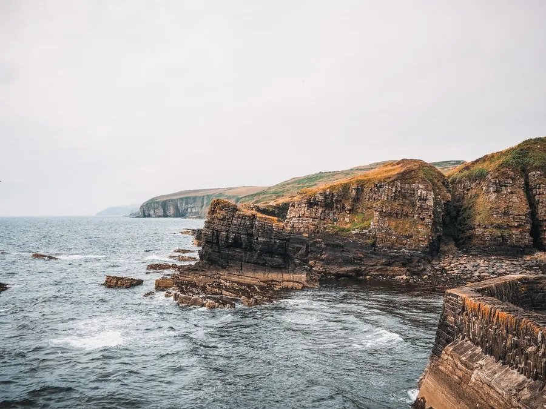
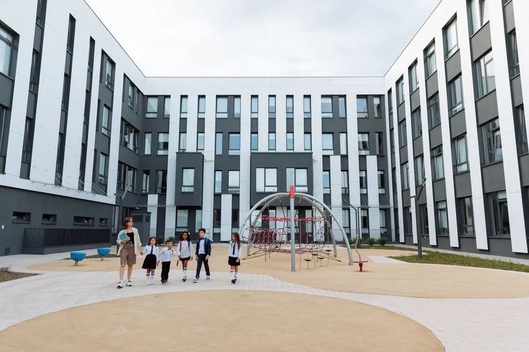
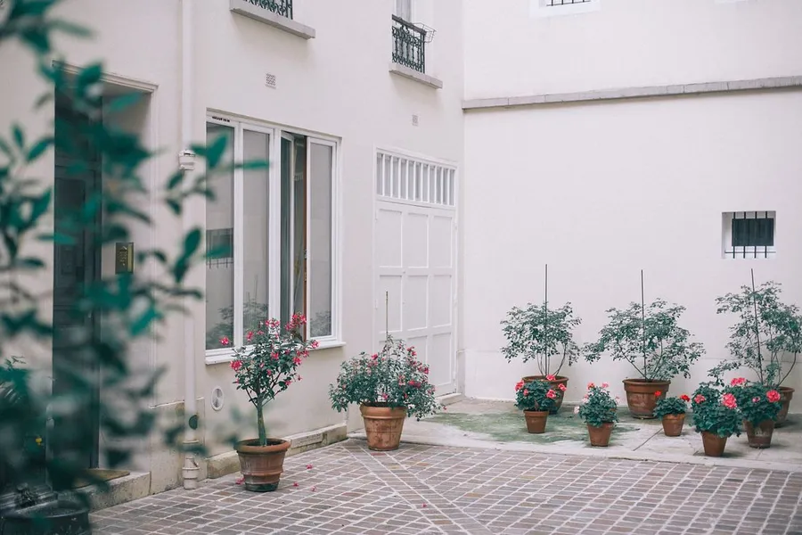
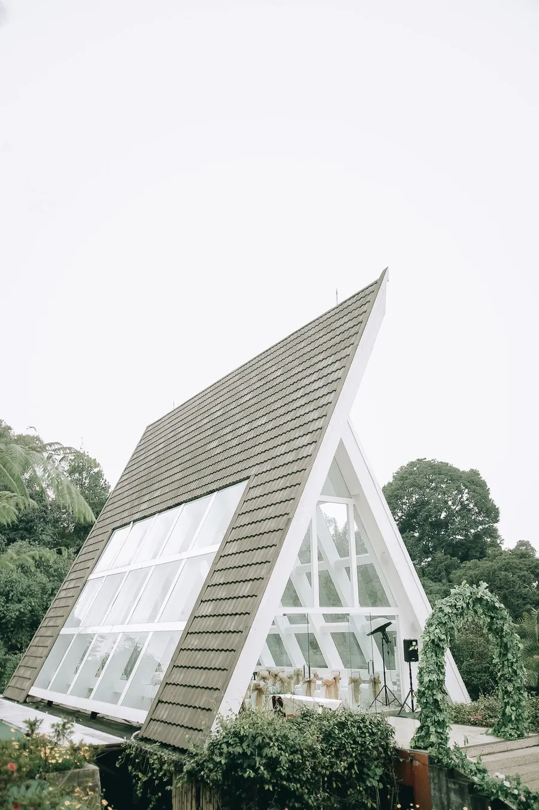
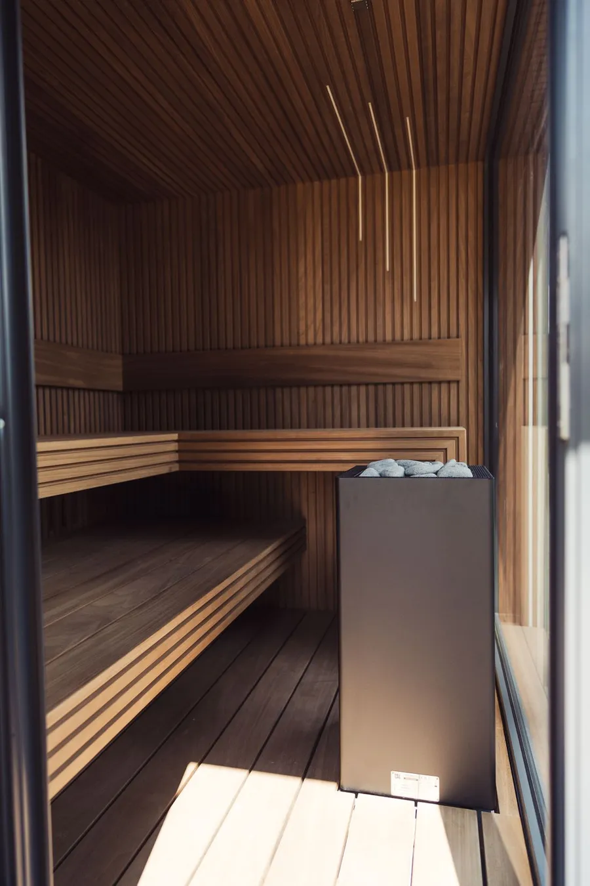
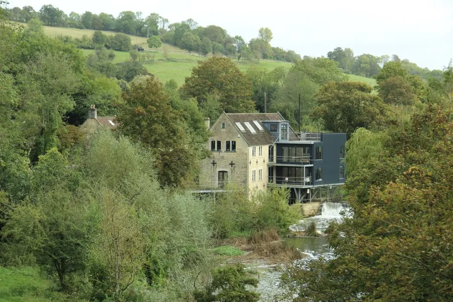
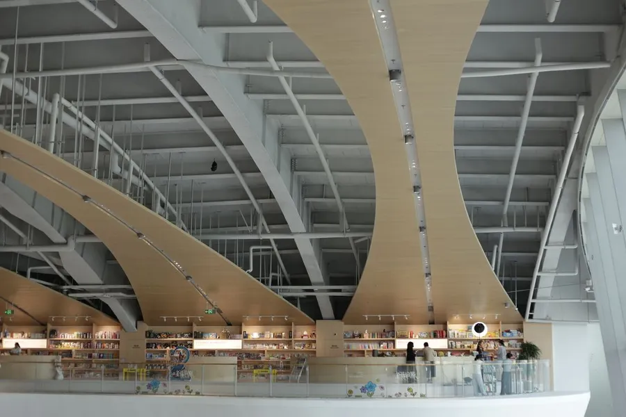

Atelier Nord
An architecture studio in Edinburgh. We design quiet, low-carbon homes, schools and libraries, and here they stand side by side.
0 m walked
House on the Skerry, Isle of Skye

House on the SkerryIsle of Skye, 2024- The Hollow TowerGlasgow, 2022

Birch Court Primary SchoolDundee, 2025
Lanark Courtyard HousesEdinburgh, 2021
The Orchard PavilionPerthshire, 2023
Harbour SaunaAnstruther, Fife, 2025
Tide Mill StudiosFife, 2024
Ullapool Library & ArchiveUllapool, Highland, 2023
The site decides.
Start with the site. Weather, light, ground and neighbours decide the building. We spend more time looking than drawing.
Carbon is a design brief. Natural materials, thick walls and honest detailing. Our buildings use about a quarter of the energy of a typical new one.
Make it last. Repairable, adaptable and loved. A building that is still wanted in a hundred years is the most sustainable one.
All 8 projects
- Birch Court Primary SchoolDundeeEducation3,200 m²
- Harbour SaunaAnstruther, FifeResidential40 m²
- House on the SkerryIsle of SkyeResidential185 m²
- Tide Mill StudiosFifeWorkplace900 m²
- The Orchard PavilionPerthshireCultural220 m²
- Ullapool Library & ArchiveUllapool, HighlandCultural1,450 m²
- The Hollow TowerGlasgowWorkplace6,800 m²
- Lanark Courtyard HousesEdinburghResidential1,100 m²
- Projects completed
- 64
- Awards and shortlists
- 21
- Average energy saving
- 72%
- Years in practice
- 15
Journal
Why we still draw by hand first
Before any software opens, every project starts with a pencil. Here is why that slow first hour pays for itself.
Building with timber: five lessons from five projects
Cross-laminated timber is not a magic material. It is a very good one, if you respect it. Here is what five projects taught us.
Designing a school that teaches itself
Birch Court was designed around a simple idea: a building can be a teacher. This is how that idea shaped the plan.
Start a project
Start a projectBring a photo of the plot and a list of what matters. The first conversation is free. 12 Leith Walk Mews, Edinburgh EH6 5AA.